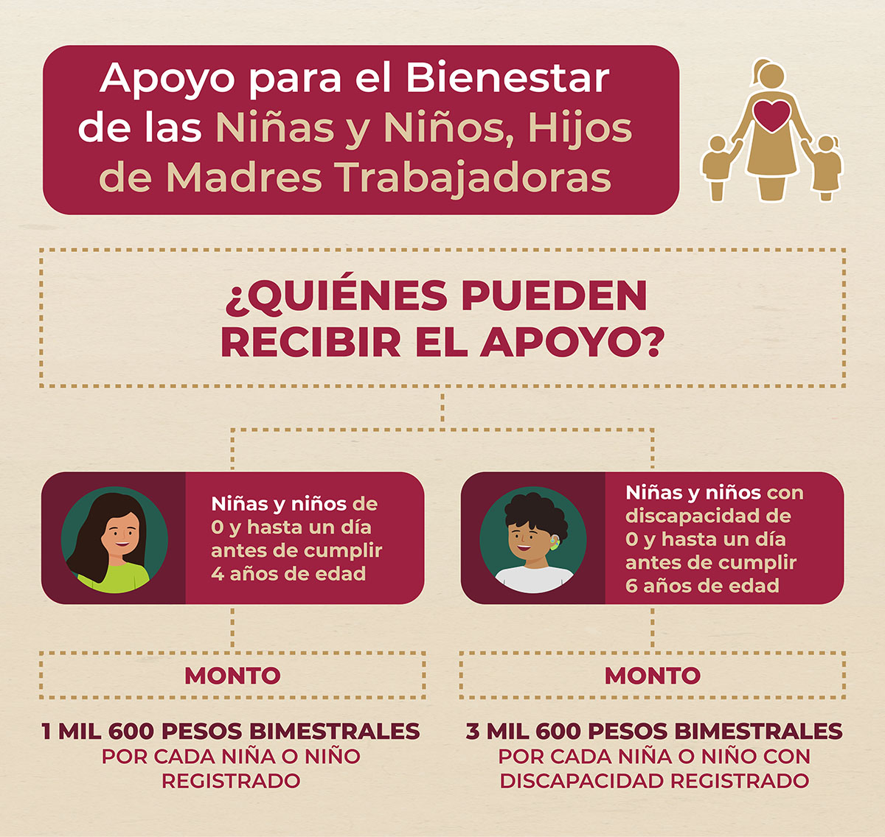
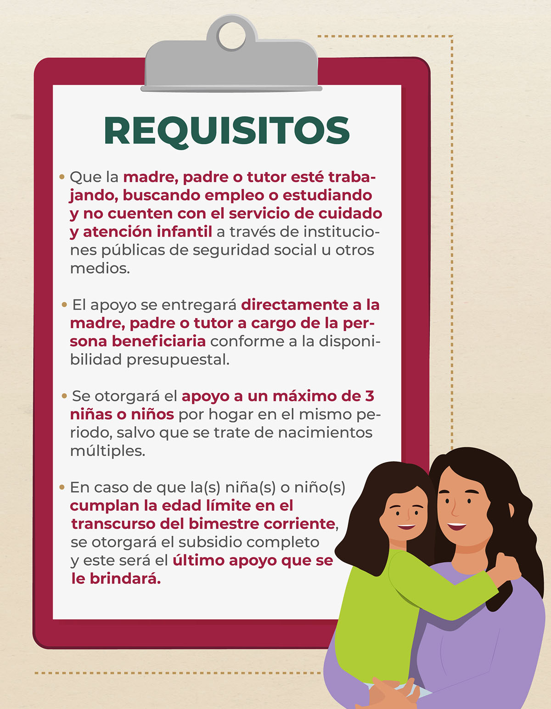
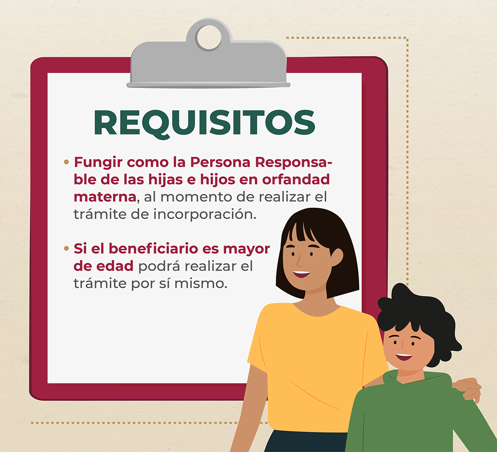

Peograma para el bienestar de las niñas y niños, hijos de madres trabajadoras.
Busca contribuir a mejorar las condiciones de acceso a cuidados y educación, que permitan el ejercicio pleno de los derechos sociales.
Objetivo.
Contribuir a mejorar las condiciones de acceso a cuidados y educación, que permitan el ejercicio pleno de los derechos sociales de niñas, niños, adolescentes y jóvenes de hasta 23 años de edad que se encuentran en situación de vulnerabilidad por la ausencia de uno o de ambos padres, mediante la entrega de un apoyo económico.
Población objetivo general.
Niñas, niños, adolescentes y jóvenes, de 0 a 23 años de edad que están en situación de vulnerabilidad por la ausencia de uno o de ambos padres.
Modalidades.
A) Apoyo para el bienestar de las niñas y niños, hijos de madres trabajadoras.
Requisitos
Documentación
1. Documentación de la madre, padre o tutor.
- Escrito libre bajo protesta de decir verdad, en donde señale si trabaja, busca trabajo o si está estudiando. En caso de estar estudiando, se deberá presentar una constancia de estudios emitida por la institución en la que estudia.
- Cartas de no afiliación al Instituto Mexicano del Seguro Social (IMSS) e Instituto de Seguridad y Servicios Sociales de los Trabajadores del Estado (ISSSTE), las cuales podrán tramitarse e imprimirse desde el portal de internet correspondiente a cada Institución, (se excluye de este requisito a los tutores).
- Identificación oficial vigente de la madre, padre solo o tutor en original y copia.
- Clave Única de Registro de Población (CURP) de la madre, padre solo o tutor en original y copia. En caso de ser menor de edad presentar pasaporte, acta de nacimiento o carta de identidad emitida por el municipio.
- Comprobante de domicilio actualizado. Entregar copia y presentar original para cotejo de cualquiera de los documentos siguientes:
- Recibo de pago de energía eléctrica, agua, teléfono o impuesto predial, o en su caso, constancia de residencia de la autoridad local.
2. Documentos de niña o niño que será beneficiario del programa:
- Acta de nacimiento de cada niña(o) que solicita inscribir en original y copia.
- Clave Única de Registro de Población (CURP) de cada niña(o) en original y copia.
3. Documentos de niña o niño con discapacidad que será beneficiario del programa
- Acta de nacimiento de cada niña(o) que solicita inscribir en original y copia.
- Clave Única de Registro de Población (CURP) de cada niña(o) en original y copia.
- Cuando la discapacidad no sea visible para el personal de apoyo de la Secretaría de Bienestar, se requerirá certificado médico original emitido por alguna Institución Pública del Sector Salud o por médico con cédula profesional, especialista en el tipo de discapacidad.
Población indígena.
1. Documentos de madre, padre o tutor indígena:
- Vivir en alguno de los municipios considerados indígenas de acuerdo a la clasificación del Instituto Nacional de los Pueblos Indígenas.
- Constancia de pertenencia o documento emitido por las autoridades indígenas conforme a sus usos y costumbres, o bien, Carta formulada ante dos testigos en la que señale la pertenencia a la comunidad indígena de acuerdo a sus usos y costumbres.
- Escrito libre bajo protesta de decir verdad, donde manifieste si trabaja, estudia o se capacita.
2. Documentación de la niña o niño de población indígena:
- Constancia de la partera o persona que asistió el alumbramiento con la firma de dos testigos.
3. Documentación de la niña o niño con discapacidad de la población indígena:
- Cuando la discapacidad no sea visible para el personal adscrito de la Delegación de Programas para el Desarrollo de la Secretaría, se requerirá el escrito que avale la condición médica por el médico tradicional de la comunidad
B) Apoyo para el bienestar de las niñas, niños, adolescentes y jóvenes en orfandad materna.
- Las incorporaciones de las hijas e hijos en orfandad, corresponderán a madres fallecidas durante el mes de marzo 2013 en adelante.
Población objetivo.
- Niñas, niños, adolescentes y jóvenes, de 0 y hasta 23 años de edad, en situación de vulnerabilidad por la ausencia permanente de la madre, causada por su fallecimiento (orfandad materna).
- Niñas, niños y jóvenes que se encontraban afiliados al Programa Seguro de Vida para Jefas de Familia, vigente hasta el ejercicio fiscal 2020.
Requisitos.
Documentación.
Documentos que debe presentar la persona responsable de hijas e hijos en orfandad materna o de la persona mayor de edad (de hasta 23 años de edad), en orfandad materna
- dentificación oficial. Entregar copia y exhibir original para cotejo de alguna de las siguientes:
- Credencial para votar vigente.
- Cédula Profesional.
- Pasaporte vigente.
- Cartilla del Servicio Militar vigente.
- Forma Migratoria.
- Copia certificada del acta de defunción de la madre.
- También se admitirá el acta de presunción de muerte como documento equivalente al del acta de defunción.
- Este documento debe ser de no más de tres meses de antigüedad a la fecha de su entrega.
- Acta de nacimiento vigente de cada una(o) de las(os) hijas(os) de hasta 23 años de edad, en orfandad materna, original y copia.
- Clave Única de Registro de Población (CURP) vigente. Este documento debe ser de la madre fallecida, de la persona responsable y de cada una de las hijas e hijos en orfandad materna de hasta 23 años.
- Firmar carta responsiva en formato libre. Donde se compromete la persona responsable de administrar y hacer buen uso del recurso económico que le será entregado, para el bienestar de las hijas e hijos en orfandad materna.